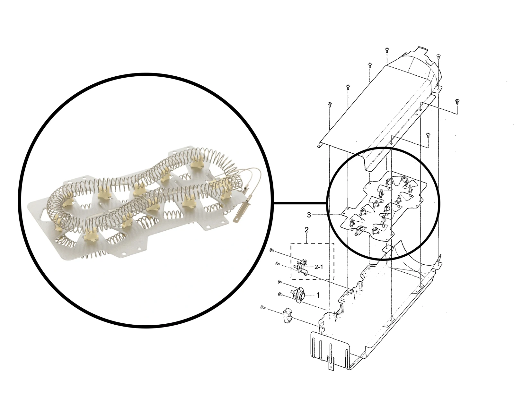
The Heating Element Behind This No-Heat Repair
This Samsung dryer repair in Fishers, Indiana started with a straightforward complaint: the dryer was not producing hot air. Diagnosis identified a burned-out heating element. The heater assembly diagram shows the element inside its housing, matching the component documented in the service photographs below.
The repair also included replacement of a worn idler pulley and cleaning inside the appliance. After reassembly and testing, the dryer heated again.
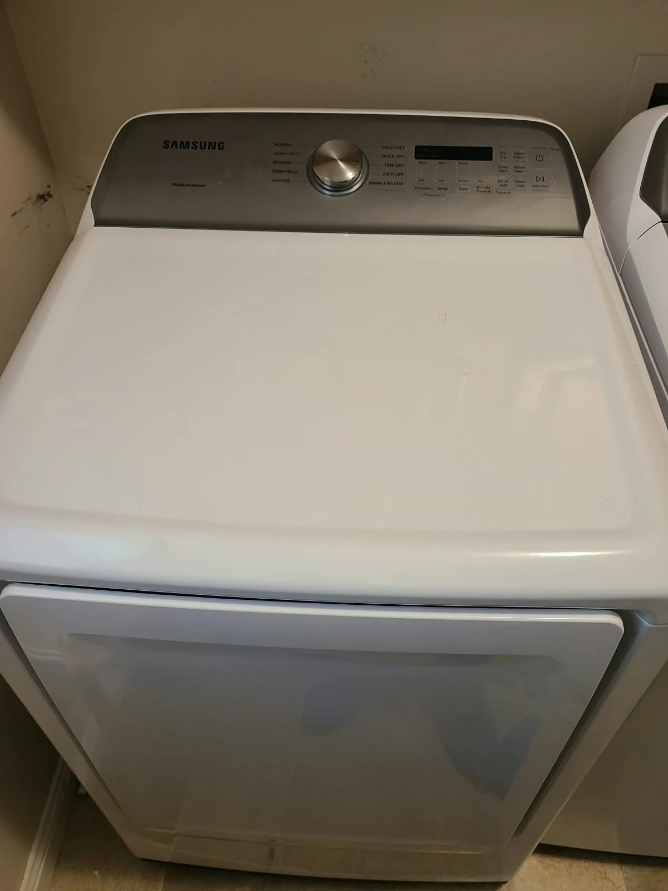
The Customer Concern: No Hot Air
The homeowner contacted Alex Appliance Repair because their Samsung dryer was not heating. We visited the Fishers home, opened the dryer for diagnosis and tested the fuses and heating element.
The failed heating element was the confirmed cause of the no-heat condition in this service visit. We also inspected the accessible drive components while the dryer was open.
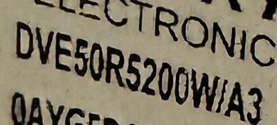
Confirming the Model: Samsung DVE50R5200W/A3
The original appliance label identifies the dryer as Samsung DVE50R5200W/A3. The photograph here is a crop of the actual label from this machine.
When booking service, send the complete model number and describe the symptom. For this dryer, the complaint was a lack of hot air, and the repair findings were confirmed after opening and testing the appliance.
Opening the Dryer and Inspecting the Interior
The front panel was removed to gain access. With the drum out, the heater housing, motor, idler pulley and cabinet floor were accessible for diagnosis and cleaning. The photographs show the machine at two stages of disassembly, including dust and lint inside the cabinet before cleaning.
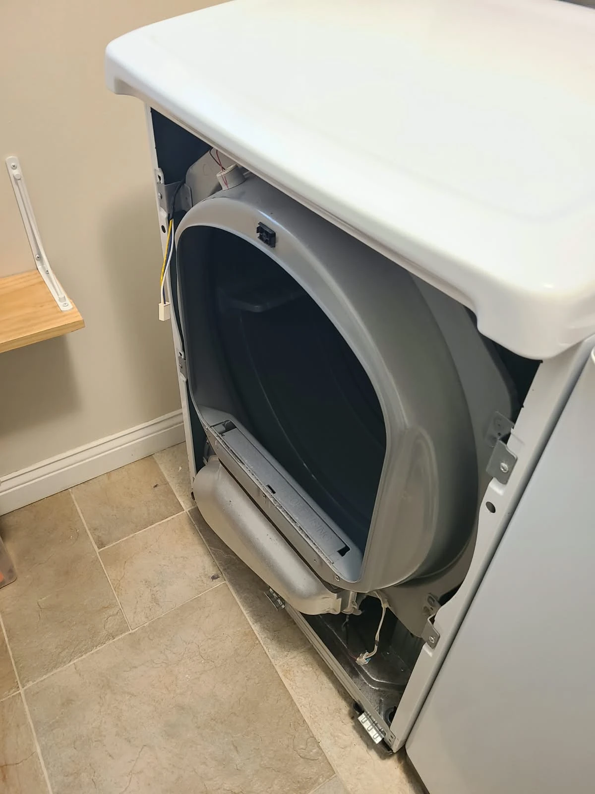
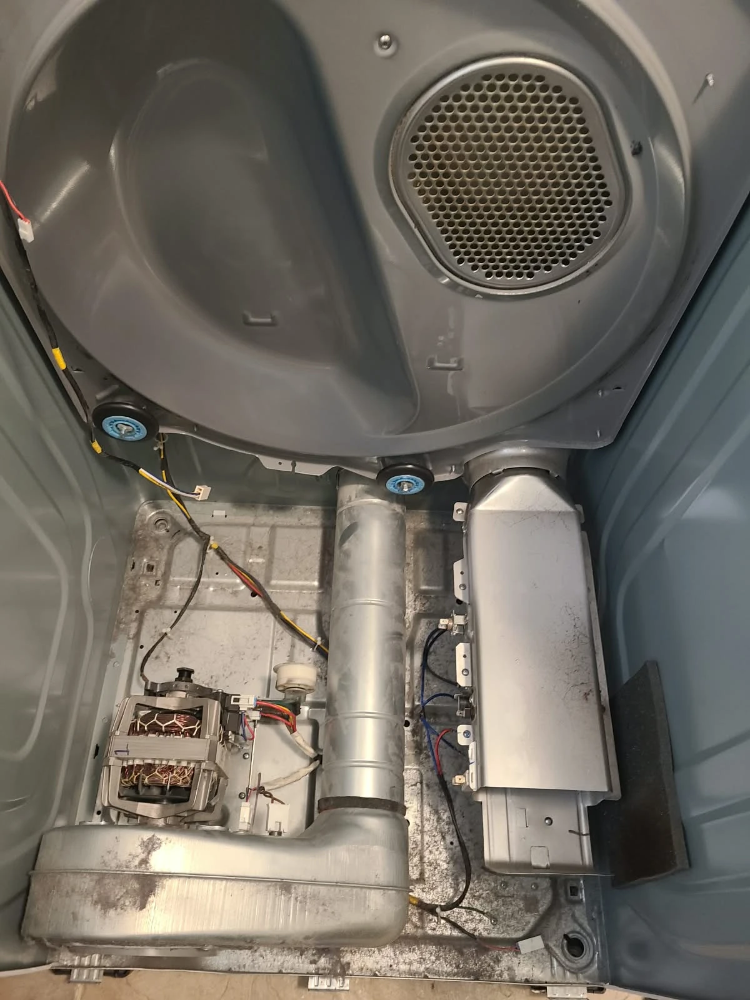
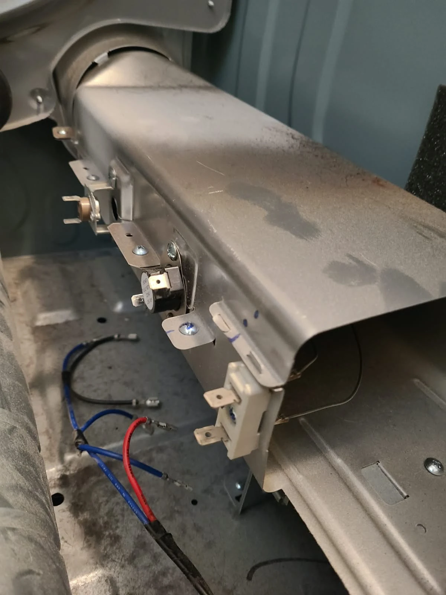
Testing the Fuses and Heating Element
We tested the fuses and heating element during diagnosis. The element had burned out and needed replacement. The close-up shows the heater housing and thermal components exposed for service.
The confirmed replacement work on this visit was the heating element and idler pulley. The service record does not include fuse replacement.
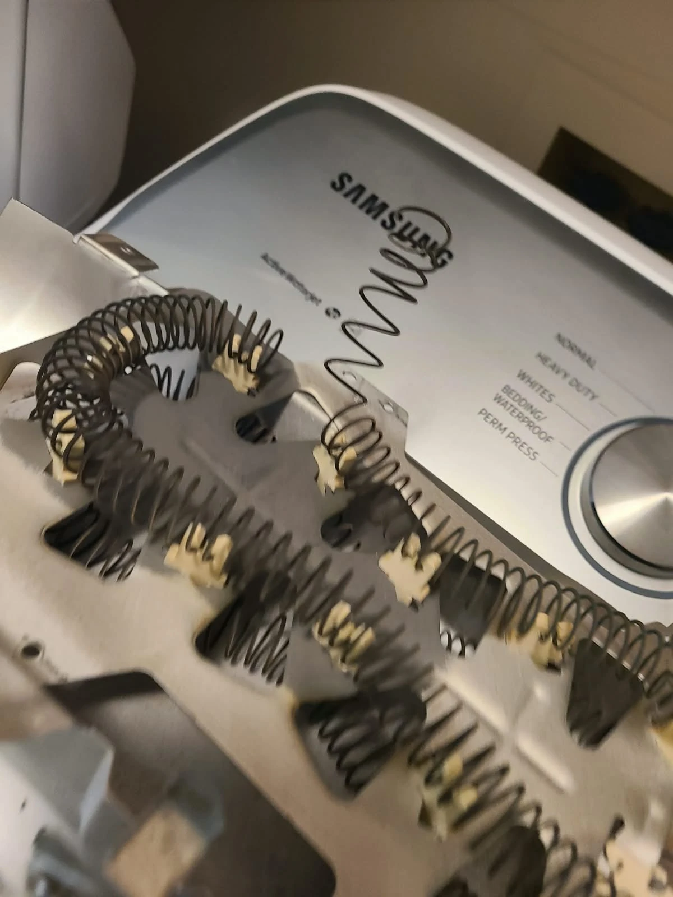
A Visibly Broken Heating Coil
The removed heating element shows a visibly broken coil. This photograph documents the damaged component found during the no-heat diagnosis.
The failed element was removed from the housing and replaced. Later photographs show the replacement coil fitted into the housing before the dryer was reassembled and tested.
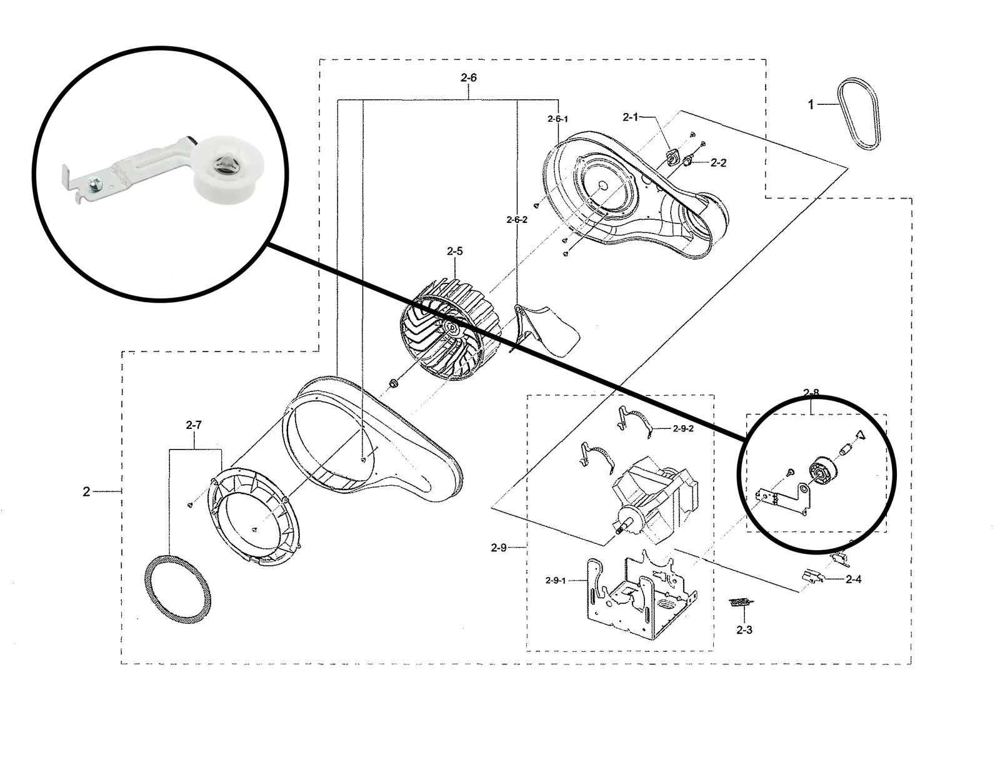
Inspecting the Idler Pulley and Keeping the Good Belt
The drive assembly diagram highlights the idler pulley location. During inspection, the original pulley showed some wear, so we replaced it while the dryer was disassembled.
The drive belt was in good condition and did not need replacement. It was retained for reassembly. The pulley wear was a separate finding; it was not identified as the cause of the heating failure.
Replacing the Worn Idler Pulley
The first photograph shows the removed pulley. The second shows the replacement installed beside the motor. This addresses the wear found during inspection while preserving the belt that was still in good condition.
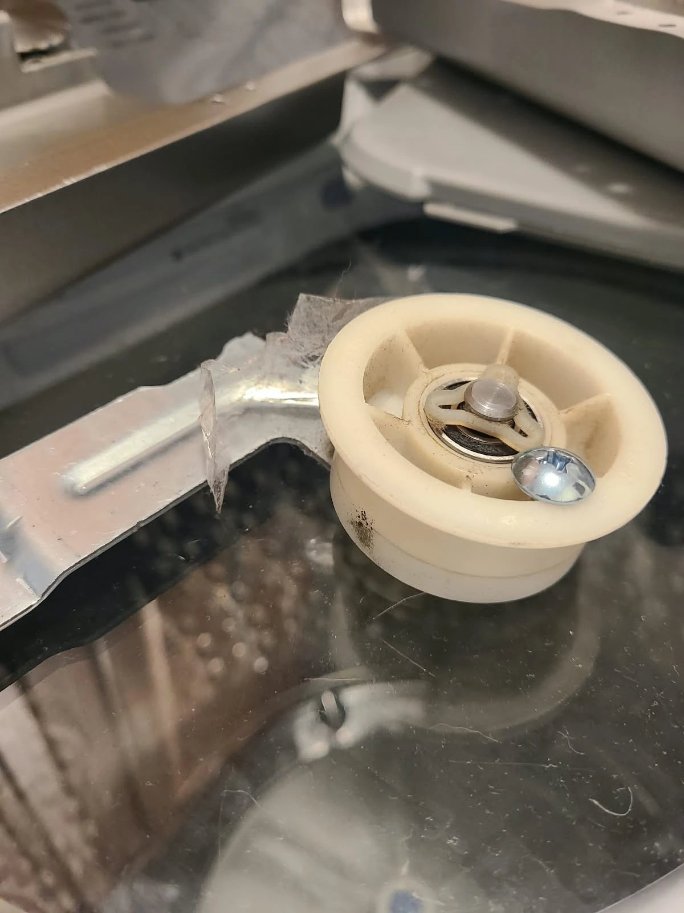
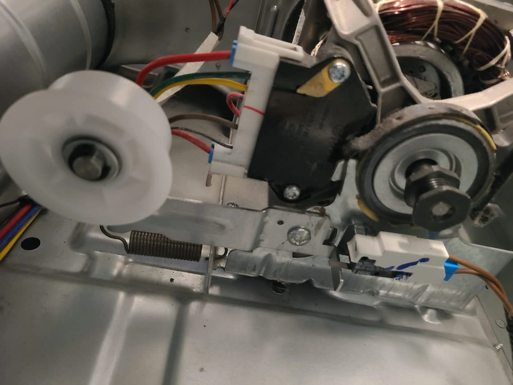
Cleaning the Internal Duct and Components
With the appliance open, we cleaned the internal surfaces and components. These before-and-after photographs show the removed internal lint duct and its opening after cleaning. Cleaning was part of this repair, alongside replacement of the two worn or failed components.
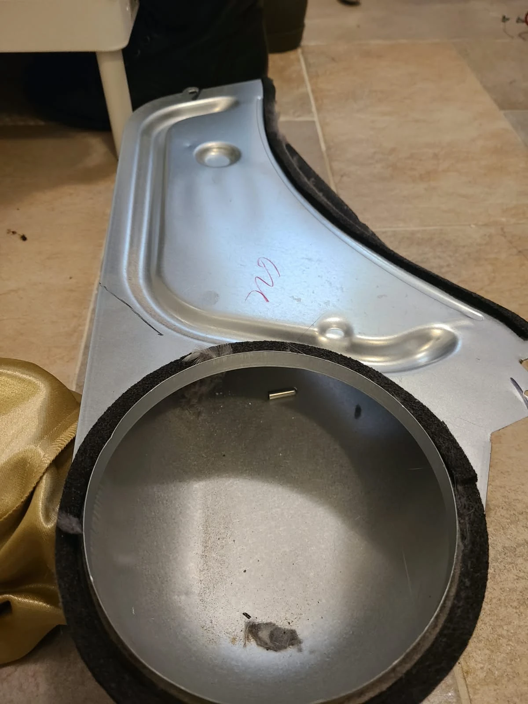
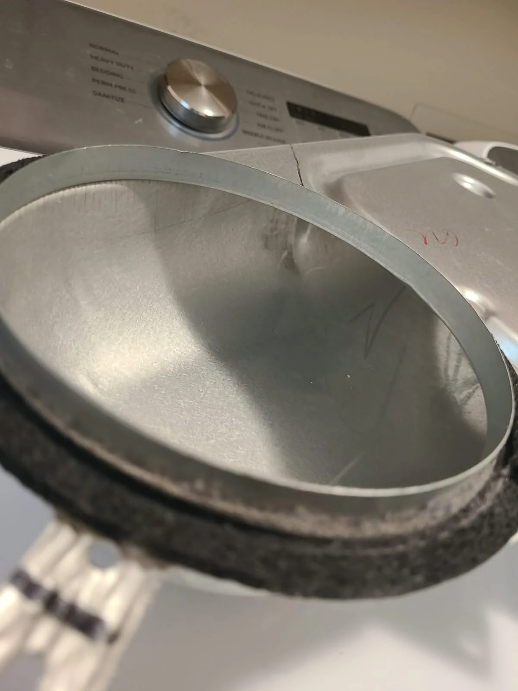
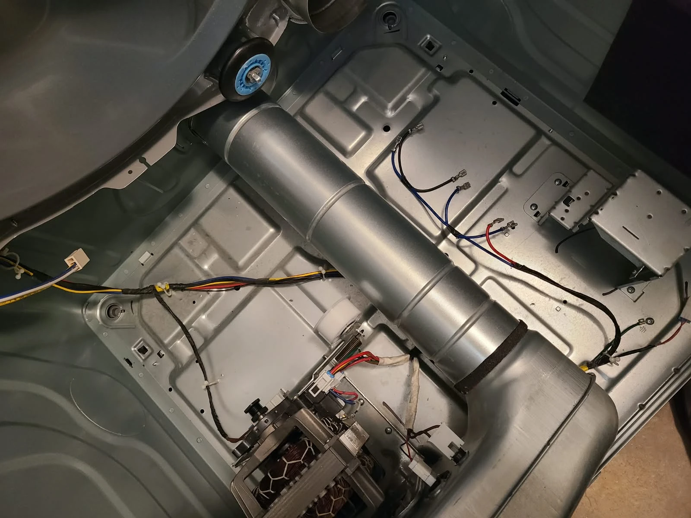
A Clean Cabinet Before Reassembly
The cabinet floor and accessible internal surfaces were cleaned before the dryer was reassembled. This view shows the cleaned cabinet and replacement idler pulley while the heater assembly was still removed.
We also cleaned the exterior vent grille, which was slightly clogged. That work was limited to the outside grille; this visit is not described as a full-length household vent-duct cleaning. The grille buildup was not established as the cause of the burned-out element.
Installing the Replacement Heating Element
The replacement element was fitted into the heater housing, and the housing was reassembled. The photographs show the new coil before the cover was closed and inside the assembled housing. We then reassembled the dryer with its existing belt and the replacement idler pulley.
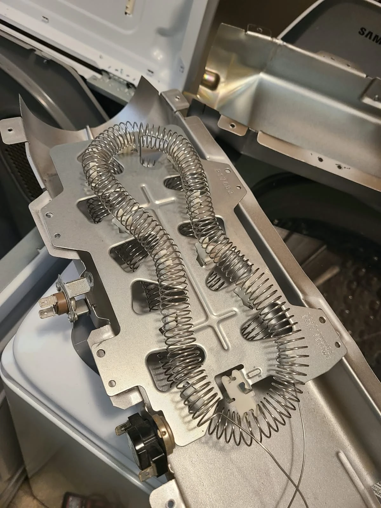
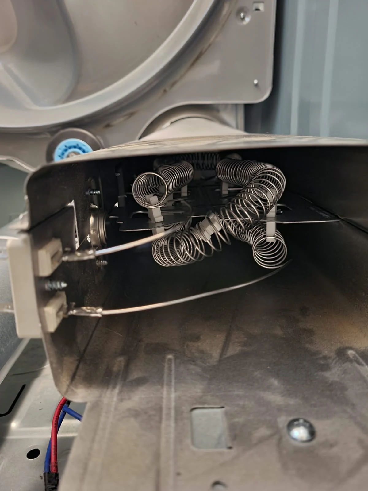
Final Testing: The Dryer Heated Again
After everything was reassembled, we tested the dryer. Heating was restored, resolving the customer's complaint about the lack of hot air. The completed work included heating element replacement, idler pulley replacement, internal cleaning and exterior grille cleaning.
The existing belt remained in service because it was in good condition. No additional parts replacement is claimed in this repair record.
Questions About This Samsung Dryer Repair
Why was this Samsung dryer not heating?
Diagnosis found a burned-out heating element. The removed element had a visibly broken coil, and heating returned after replacement and reassembly.
Was the drive belt replaced?
No. The belt was inspected and found to be in good condition. We replaced the worn idler pulley and retained the belt.
Were the fuses checked?
Yes. The technician tested the fuses and heating element during diagnosis. Fuse replacement was not part of the reported work.
Was the entire household dryer vent cleaned?
The internal surfaces and components were cleaned, along with the slightly clogged exterior vent grille. Full-length household duct cleaning was not reported.
Does every Samsung dryer without heat need a new element?
This article describes one confirmed failure. A similar symptom on another dryer still requires diagnosis before deciding which repair is needed.
Samsung Dryer Repair in Fishers, Indiana
If your Samsung dryer is not heating, Alex Appliance Repair provides dryer repair in Fishers. Share the model number and symptoms when requesting service. We explain the findings and estimate before approved repair work and check the appliance after repair.
Learn about our Samsung appliance repair, dryer repair services and Fishers service area, or browse more documented repair stories.
Alex Appliance Repair is an independent appliance repair service operated by Aksenov LLC. Call (463) 248-8429 to discuss your dryer problem.
Book dryer repair in Fishers